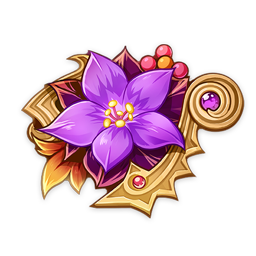

Genshin Impact · Versión 7.2
Análisis del Rol y Escalado
Clorinde es un personaje de elemento Electro originario de Fontaine que utiliza Espada Ligera y se posiciona en el tier T2 (B) Main DPS dentro del rol de Hypercarry Electro en Campo (Disparos de Pistola y Estocadas de Espada). Su rendimiento en combate gira en torno a este eje principal: Escalado por ATQ% y Mecánica de Pacto Perpetuo (Bond of Life).
Para maximizar su aporte en el equipo, la configuración prioritaria combina Expiadora con el conjunto de artefactos Fragmento de la Armonía Fantasmal (4 piezas), respetando la jerarquía de estadísticas 1. Daño Crítico / Prob. Crítica (tope 80% con pasiva de ascensión) > 2. ATQ% > 3. Maestría Elemental (80 – 160 EM en Aggravate) > 4. Recarga de Energía% y subiendo sus habilidades en orden: Habilidad Elemental (E) >>> Definitiva (Q) >>> Ataques Normales (No subir).
Mejores Armas
Opciones recomendadas ordenadas por rendimiento según el meta actual y compatibilidad con sus rotaciones:
-
 Expiadora ★★★★★Opción por rol+44.1% Daño Crítico, +20% ATQ y hasta +48% Daño con fluctuaciones de Pacto Perpetuo.
Expiadora ★★★★★Opción por rol+44.1% Daño Crítico, +20% ATQ y hasta +48% Daño con fluctuaciones de Pacto Perpetuo. -
 Reflejo de las Tinieblas ★★★★★Opción por rolStat-sticks excepcionales de Crítico.
Reflejo de las Tinieblas ★★★★★Opción por rolStat-sticks excepcionales de Crítico. -
 Cortador de Jade Primordial ★★★★★Opción por rol+44.1% Prob. Crítica pura que facilita balancear alto Daño Crítico en artefactos.
Cortador de Jade Primordial ★★★★★Opción por rol+44.1% Prob. Crítica pura que facilita balancear alto Daño Crítico en artefactos. -
 Espada Negra ★★★★Opción por rol+Prob. Crítica y aumento directo a sus disparos y estocadas normales.
Espada Negra ★★★★Opción por rol+Prob. Crítica y aumento directo a sus disparos y estocadas normales. -
 Vado del Río Ceniciento ★★★★Opción por rolOpciones F2P funcionales.
Vado del Río Ceniciento ★★★★Opción por rolOpciones F2P funcionales.
Mejores Sets de Artefactos
Combinaciones de 4 piezas o mezclas de 2 piezas para maximizar su contribución:
-
 Fragmento de la Armonía Fantasmal (4 piezas) BiS Indiscutible
Fragmento de la Armonía Fantasmal (4 piezas) BiS Indiscutible+54% Daño constante al aumentar o consumir Pacto Perpetuo en cada disparo.
-

Furia del Trueno (4 piezas) Alternativa Aggravate+15% Bono Electro y reduce el enfriamiento de su habilidad E para rotaciones continuas.
Estadísticas Principales y Secundarias
Atributos prioritarios en artefactos para un balance óptimo de daño o soporte:
| Pieza | Estadística Principal |
|---|---|
| Reloj (Arenas) | ATQ% |
| Cáliz | Bono Daño Electro% |
| Corona | Daño Crítico% (o Prob. CR) |
Prioridad de Subestadísticas
- 1. Daño Crítico / Prob. Crítica (tope 80% con pasiva de ascensión)
- 2. ATQ%
- 3. Maestría Elemental (80 – 160 EM en Aggravate)
- 4. Recarga de Energía%
Prioridad de Talentos
Habilidad Elemental (E) >>> Definitiva (Q) >>> Ataques Normales (No subir)
Objetivos de Estadísticas (Nivel 90)
Las metas numéricas exactas de Clorinde varían según el arma equipada, los refinamientos y la generación de partículas de su equipo.
Prioriza cumplir primero la Recarga de Energía necesaria para mantener la rotación fluida de su Habilidad Definitiva antes de buscar subestadísticas ofensivas adicionales.
Con piezas principales de ATQ%, Bono Daño Electro% y Daño Crítico% (o Prob. CR), enfoca tu farmeo de artefactos en: 1. Daño Crítico / Prob. Crítica (tope 80% con pasiva de ascensión) > 2. ATQ% > 3. Maestría Elemental (80 – 160 EM en Aggravate) > 4. Recarga de Energía% (Escalado por ATQ% y Mecánica de Pacto Perpetuo (Bond of Life)).
Talentos de Combate y Materiales (Nivel 1 al 10)
Habilidades principales de Clorinde y desglose exacto de libros, materiales y Mora para mejorar sus talentos:


Composiciones de Equipo Recomendadas
Alineaciones con mayor sinergia elemental y amplificación de daño en el Abismo y Teatro Fantasía:
Materiales de Ascensión (Nivel 1 al 90)
Recursos totales requeridos para desbloquear las 6 fases de ascensión de Clorinde. Coste total de Mora en ascensiones: 420.000 Mora.


Sinergias y Guías Relacionadas
Explora las fichas de armas, artefactos y materiales de los principales compañeros de equipo para Clorinde: